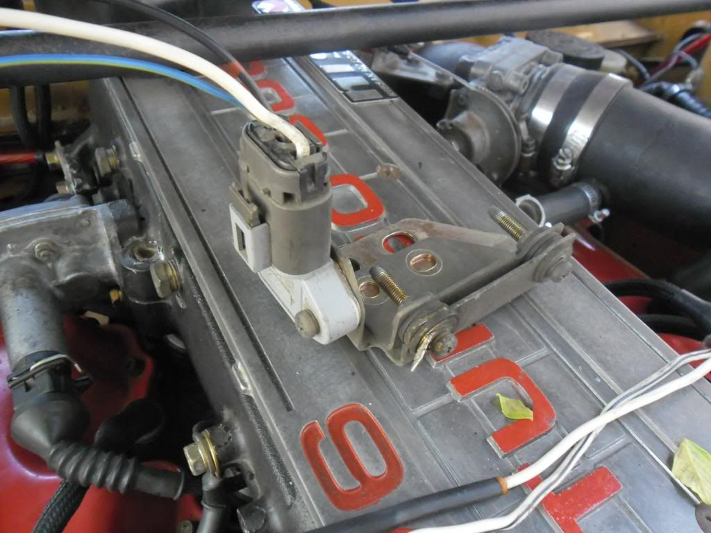

-
Why not make it bent over above the bottom one or even the other way, like a Z, instead of twisting? The unit would sit flat then and fabrication would be simpler -
The one's in the Maxima and Pathfinder both come with their own bracket that are pretty easy to find a place to attach to.Prius… because Pretentious wouldn't fit across the back of the car…
Cheap, Fast, Reliable - pick any two
My 1986 Turbo Build -
The best brackets are from the Nissan Quest and certain Maximas. Those are the ones I've shipped to various people. All I had to do was bend a tab to mount it in the stock location, and it looks great. I'm out of PRW-2s with those brackets, but still have two spares. One with the bulky pathfinder bracket, the other without any bracket. I'll do a JY run soon to get more."Understeer is when you hit the wall with the front of the car. Oversteer is when you hit the wall with the rear of the car. Horsepower is how fast you hit the wall. Torque is how far you take the wall with you…"
-'68 Datsun 1600 Roadster
Build Thread: http://community.ratsun.net/topic/21…-build-thread/
-'85 300zx Turbo
Build Thread: http://z31performance.com/showthread…)build-thread! -
^^ "The best brackets are from the Nissan Quest and certain Maximas."
So I've heard/read. There aren't any around here though, and the zip ties I was using was driving me insane. So I had some extra stainless left over from a pinball machine project (Funhouse), was bored and voila. I don't expect to sell any, I really only threw that number up there cuz if I didn't I'd get people wanting to know how much to make them one. -
I think your bracket looks great! In theory, it is a MUCH better solution than the Maxima/Quest bracket. I was more mentioning how easy it usually is to get one of those brackets. I understand if it is hard to acquire though… I can only get a limited supply depending on what shows up in my local JY. It would be good to have a reliable source when scavenging dries up. I'm out right now, for that matter.aZinMA;344904 wrote: ^^ "The best brackets are from the Nissan Quest and certain Maximas."
So I've heard/read. There aren't any around here though, and the zip ties I was using was driving me insane. So I had some extra stainless left over from a pinball machine project (Funhouse), was bored and voila. I don't expect to sell any, I really only threw that number up there cuz if I didn't I'd get people wanting to know how much to make them one."Understeer is when you hit the wall with the front of the car. Oversteer is when you hit the wall with the rear of the car. Horsepower is how fast you hit the wall. Torque is how far you take the wall with you…"
-'68 Datsun 1600 Roadster
Build Thread: http://community.ratsun.net/topic/21…-build-thread/
-'85 300zx Turbo
Build Thread: http://z31performance.com/showthread…)build-thread! -
infiniti m30. has the mount for the pwr 2 (but theres a pwr1 in its spot) and it has a cover..
Cant beat it LOL! -
With a cover? Very cool! Besides, from what I understand, the PRW-1 is still an upgrade.Big_E-Dog2;344999 wrote: infiniti m30. has the mount for the pwr 2 (but theres a pwr1 in its spot) and it has a cover..
Cant beat it LOL!"Understeer is when you hit the wall with the front of the car. Oversteer is when you hit the wall with the rear of the car. Horsepower is how fast you hit the wall. Torque is how far you take the wall with you…"
-'68 Datsun 1600 Roadster
Build Thread: http://community.ratsun.net/topic/21…-build-thread/
-'85 300zx Turbo
Build Thread: http://z31performance.com/showthread…)build-thread! -
M30s are rare as fuck, though.- VG30DET (HE341) 86 300ZX - 1982 280ZX Turbo - Headered NA 1986 300ZX 2+2 - 2000 Xterra - -
well then guess theres a way to make some money lol!
pics of said backet…
 -
Here is my setup.
Its a complete assembly setup from a M30 including the black plastic cover.
The transistor is the PWR-2
-
You can also get those off S13's.
~Alexsplatter fake blood on fubar'd quarter and roll out.
pedestrians=mobile clipping points -Benedict on PurePontiackid's 280zx -
Just wanted to add, anyone with an 84-85 who has done the PRW-2 mod and/or idle block off, BUY AN 87NA ECU! Holy dogfish is it an improvement!" I spend another hour trying to rip the bolt out of the subframe, pausing every five minutes to scream and contemplate how I get myself into these situations. Two cars over, a guy urinates. I watch the steam waft off of the fresh puddle in the gravel. It merges with the blowing snow and is cut by the aerodynamic wedge of a nearby Fiero. Beautiful. Another pry and the carrier finally falls to earth. I walk out of there $80 lighter, which makes me more mad." - Brian Kolar -
4/87T was having some serious cold start issues. The ECU gave code 21 (if I remember correctly) which is the ignition system. Turns out this can be the PTU, CAS, or Coil, according to the FSM, or a bad ECU. I happen to have spares of everything but the PTU and ECU so I swapped as much as I could with no difference.
Symptoms:
Terrible cold start, would sometimes die without increasing throttle.
High idle, up to 1200 at times.
Would dive the RPMs from 900-400 and back up
Would miss every ~4 seconds
letting off the throttle, shifting to neutral, or coming to a stop would sometimes kill the engine or dive the RPMS like above.
When up to temperature, it ran ok but conservative gas mileage would be at 9 max in town, highway still up to 26
I upgraded to the PRW2 and it fixed everything. Writing this just in case someone else has similar symptoms. -
^^^Impressive. Just got mine today! -
Does this also apply to the 86?Urstin;n761399 wrote: Just wanted to add, anyone with an 84-85 who has done the PRW-2 mod and/or idle block off, BUY AN 87NA ECU! Holy dogfish is it an improvement!
1986 300ZX N/A 5Speed project. Needs work, but that's the point, isn't it?

Copyright © 2006–. All rights reserved. Privacy Policy